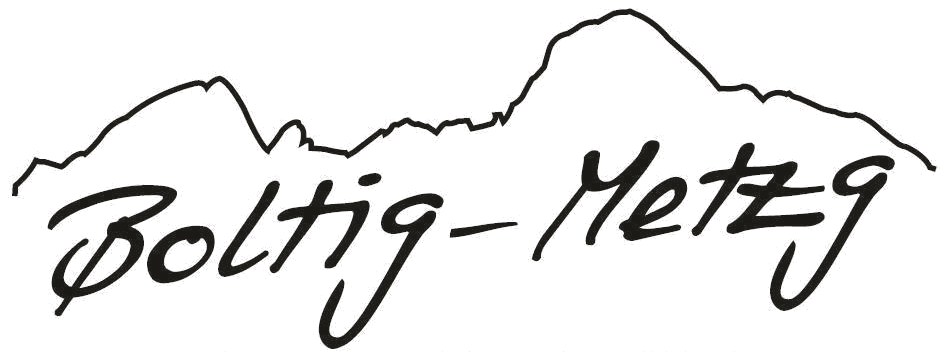

Die dicke Lüge
So enden wir nie
Ein Algorithmus hat sich die Dicken in sexy ausgemalt. Sieht in etwa aus wie 90% der Fitness-Infaulenzer auf Instagram. Das kann kein Ziel sein, denn: Ein bisschen dick ist nicht so slim.


Zwei Pfunzeln haben beschlossen, schlanker zu sterben. Zwei andere sorgen dafür, dass es weh tut – und lustig wird.
Wer hier schwitzt →Stand: wird geladen …
Die Unbeugsamkeitserklärung
Es gibt Tage, da fasst ein Mann einen Entschluss, der grösser ist als er selbst. Bei Severin und Chrigu war so ein Tag — zwei feste Freunde mit einem BMI höher, als Matti Ruedi karierte Hemden im Schrank hat.
Der Plan ist simpel und huerä gnadenlos: runter mit dem Speck, rauf mit der Lebenserwartung. Die nächsten Cordon-bleu müssen verdient sein, nicht geschenkt.
Dafür haben sie sich den Teufel ins Haus geholt — zwei Coaches mit einem Motto: Plag den Dicken. Lars, lokal bekannt als Mr. Sexybless, zweitletzter Sohn eines Bergbauern, allseits begehrt und selten zu fassen. Er hat das Formhalten im steilen Gelände gelernt, lang bevor es dafür eine App gab. An seiner Seite: Bruder Mika, Mother²-Mikl, der vor allem deshalb mitläuft, um die verlorenen Kilos der zwei zu erben — und um neben der Trinkerei endlich ein zweites Hobby zu haben. Und schwerer zu werden als die Frauen, die er karisiert.
Jeden Montag schnüren sie die Schuhe an die Hufe. Das nennt sich Skinny Bitch Monday — die Krabbelgruppe für adipöse Pommespanzer. Jeden Donnerstag wird gewogen, ohne Gnade, ohne Ausrede, ohne Tricks. Aus zwei Schwergewichten werden proppere Skinny Bitches.
In Kilo Veritas.
Vier Steckbriefe, keine Ausreden
Zwei, die runter müssen. Zwei, die nachhelfen. Grösse lügt nicht, das Massband auch nicht. Frisch gewogen jeden Donnerstag.
Lade die Wahrheit …
Die Heimstrecke
Die wöchentliche Leidensschlaufe. Hier wird am Skinny Bitch Monday gelaufen, geflucht und gelegentlich gebetet. Wer oben ankommt, hat den Tag gewonnen.
Die Wahrheit als Kurve
Jeder Donnerstag ein Punkt. Je länger die Linie, desto weniger Ausrede. Eine Kurve will nach oben (Mika erbt ja die Kilos), der Rest nach unten.
Das Leaderboard der Schande
Wer hat seit dem ersten Montag am meisten Speck im Tal liegen lassen? Oben steht der Held der Woche. Zuunterst, wer am Buffet gewonnen hat.
Die dicke Lüge
Ein Algorithmus hat sich die Dicken in sexy ausgemalt. Sieht in etwa aus wie 90% der Fitness-Infaulenzer auf Instagram. Das kann kein Ziel sein, denn: Ein bisschen dick ist nicht so slim.
Wer den Dicken was hinterher wirft
Niemand wird allein schlank. Diese hier halten uns bei Kräften, bei Laune und bei Verstand. Logo verdient, nicht gekauft.
Protein-Partner

Weil Drogendealer und FitLine-Mamis uns ständig Pülverchen andrehen wollen, versorgt uns die Boltig-Metzg kostenlos mit tierischem Eiweiss zur wöchentlichen Tortur.
(Das einzige Pulver, das unsere Mütter erlauben, ist Ovomaltine — hey WANDER, meldet euch!)
Hier wäre noch Platz für dein Logo:
Gesöff-Partner
Was kippen die Dicken vor, während oder nach der Qual? Noch offen. Iso, Energy, Light-Bier, Hard-Seltzer? Überzeug uns.
Ausrüster
Sportbekleidung, Schuhe, E-Bike. Wir brauchen Stoff, der 165 Kilo aushält — und Bremsen, die's auch tun.
Pulver-Partner
Das einzig erlaubte Doping kommt aus Neuenegg. WANDER, letzte Chance.
Medien-Partner
Jemand muss die Schande dokumentieren. Zeitung, Radio, Lokal-TV — kommt vorbei und riecht selbst.
Logo hier reinhängen? Mitlaufen, lästern, was springen lassen?
Schreib uns →Fragen über die mageren Schlampen
Zwei Verfressene die abspecken sollten und zwei Magere die sie durch den Wald scheuchen. Sie bewegen die Dicken und diese revanchieren sich im Gegenzug mit Ernährungstipps, welche sie auf Herrengrösse bringen, damit sie nicht mehr in H&M's Mädchenabteilung einkaufen müssen.
Einmal die Woche (aktuell Montag) wird das Wild im Schattsite-Wald verscheucht und die Dicken pfeiffen wie alte Lokomotiven den Wanderweg hoch. Die Heimstrecke dazu ist der Ogi-Weg, benannt nach seinem Initianten. Warum? Abwechslungsreich, nicht überlaufen (Vorsicht Schlangen!) und zu umständlich für Velofahrer. Denn suchten wir Publikum, könnten wir ja gleich zum Zirkus gehen.
Jeden Donnerstag. Ohne Ausrede, ohne Tricks. Gewicht, BMI und Kilometer rechnen sich auf der Seite aus den echten Werten.
Türlich türlich sicher Digger. Kilos, Kilometer und BMI - so echt wie wir, wöchentlich aktualisiert. Kein Photoshop, kein Magenbypass. Wir schonen die Krankenkasse für unsere ehemaligen Raucherlungen.
Für Latein waren wir zu dumm. Aber dass „im Wein die Wahrheit liegt“ (in vino veritas) haben wir noch so begriffen. Da die Waage auch nicht lügt, haben wir uns das zur Kampfansage gemacht.
Vielleicht. Aber die Aufnahmekriterien sind hart und wir vertammi wählerisch. Versuchs mal. Toi toi toi.
Hier sind wir unkompliziert. Du willst uns ein paar Kilos abkaufen indem du uns bestichst und wir dann nur gut über deine Bude reden? Schreib uns. Wir suchen Partner für Gesöff, Ausrüstung, Pulver und alles, was du uns sonst noch hinterher schmeissen willst.